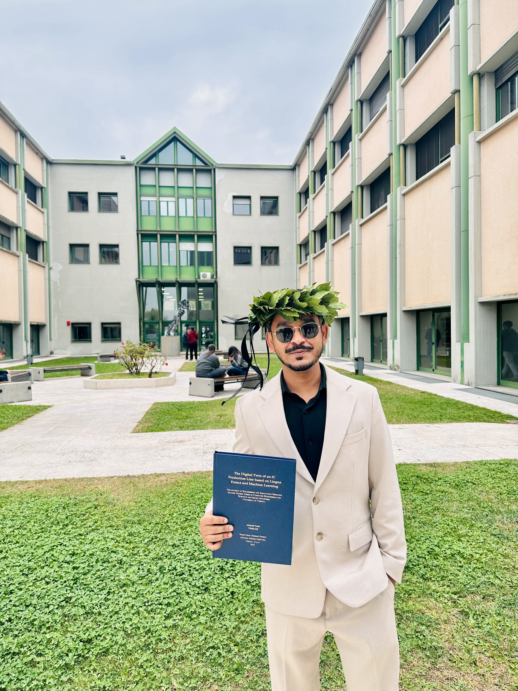
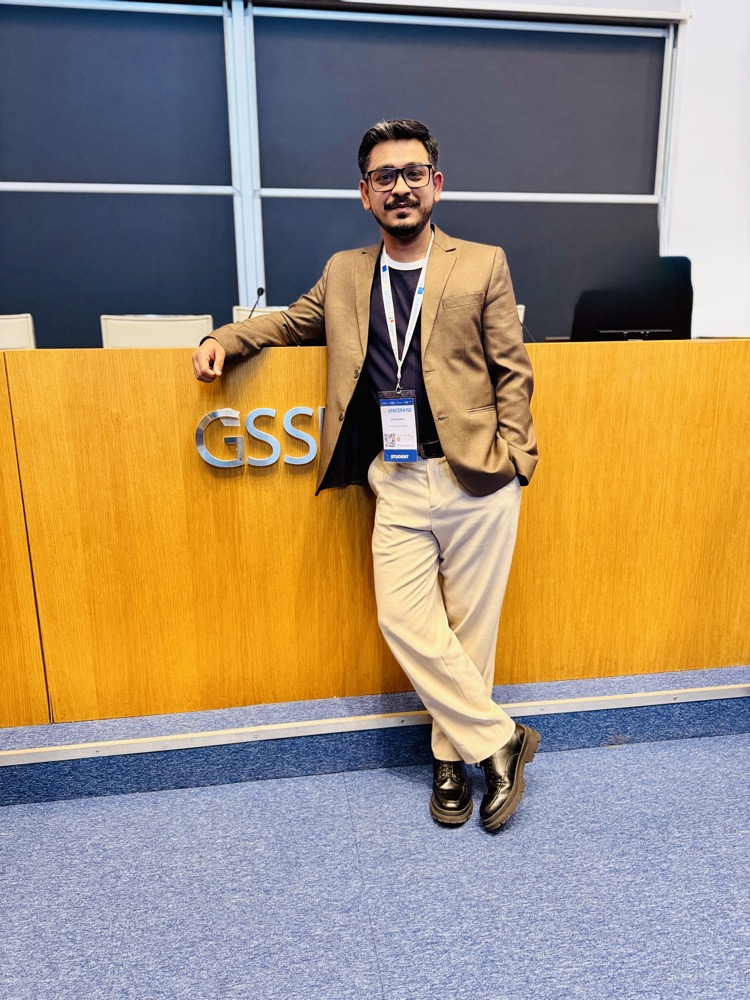

I design the drawings that let physical machines and their digital counterparts speak the same language — telemetry pipelines, predictive-maintenance models, and cyber-physical systems for smart manufacturing.

sheet 01a — recognition

scholarship awardedAwarded a SPACERAISE scholarship — the International Summer School for Space Studies and Interdisciplinary Applications, run jointly by the Gran Sasso Science Institute and Fondazione Gran Sasso Tech, funded under Italy's PNRR programme and the EU's NextGenerationEU initiative. Completed two specialised modules on-site in L'Aquila, Italy — Robotics for Space and Artificial Intelligence for Space — for a combined 60 hours of coursework.
View on LinkedIn ↗sheet 01 — profile & notes
I specialize in digital twins and smart manufacturing — designing real-time data pipelines, commissioning semiconductor equipment, and building predictive-maintenance models with machine learning. My background spans Lingua Franca, OPC UA integration, enterprise networking, and field service across telecom, VoIP, and industrial automation. Based in Milan and open to travel throughout Italy, targeting Digital Twin, IIoT, Field Service, Manufacturing Engineering, or Industry 4.0 roles.
general notes
sheet 02 — revision history
| rev | period | role / org | description of change |
|---|---|---|---|
| 06 | Jun 2026 — now | IT Desktop Support EngineerAxiom Technologies · Milan, IT | Manage desktop incidents end-to-end, IMAC and deskside break-fix support. Maintain imaging and patching via SCCM, provide VIP deskside support, act as on-site point of contact for major incidents. |
| 05 | Aug 2024 — Oct 2025 | Digital Twin & ML EngineerUniversity of Verona · IT — Research Internship | Designed a digital twin for IC production using Lingua Franca, modeling a 7-phase wafer workflow with deterministic, event-driven coordination. Built Random Forest pipelines for anomaly detection, integrated IIoT sensor streams with ≤500ms timestamping, shipped FastAPI pipelines with full QA validation. |
| 04 | Jun 2022 — Sep 2023 | VoIP EngineerSybrid Pvt. Ltd. · Karachi, PK (remote) | Delivered remote VoIP engineering for international SME clients — SIP trunk infrastructure, VoIP gateways, IP telephony endpoints. Diagnosed call-quality and routing issues while maintaining SLA compliance. |
| 03 | Jun 2020 — Jul 2021 | Technical Support EngineerEnterprise Clients · Karachi, PK | Tier-2/Tier-3 support for enterprise multi-site WAN/LAN environments, administering Network Management Systems and maintaining 99.9% uptime SLA. |
| 02 | Apr 2019 — Aug 2019 | RF Field Intern EngineerNetkom Technologies · Pakistan | Ran 2G/3G/4G drive-testing campaigns using TEMS, benchmarking core RF KPIs to guide network optimization. |
| 01 | 2016 — 2019 | B.Eng. foundation laidDawood University · Karachi, PK | Initial release. Foundation in signal processing, network protocols, and embedded systems. |
sheet 03 — materials & specification
sheet 04 — drawing set
End-to-end digital twin streaming live OPC UA telemetry into a machine-learning fault detector, served via FastAPI and visualized in a real-time Grafana dashboard.
Industrial anomaly-detection framework built on the SKAB dataset, benchmarking predictive-maintenance models on time-series data for cyber-physical fault detection.
Deep-learning segmentation pipelines for medical imagery datasets, built to improve diagnostic accuracy.
Reactive, event-driven reactor model exploring deterministic coordination for cyber-physical control systems.
sheet 05 — certification & compliance
| rev | period | qualification | detail |
|---|---|---|---|
| 02 | graduated Oct 2025 | M.Sc. Computer Engineering for Robotics & Smart IndustryUniversity of Verona · IT | Thesis: "The Digital Twin of an IC Production Line Based on Lingua Franca and Machine Learning" — reactive programming, IIoT, predictive ML. |
| 01 | 2016 — 2019 | B.Eng. Telecommunication EngineeringDawood University · Karachi, PK | Thesis: "Scalable IoT Framework for Real-Time Data Acquisition in Smart City Environments." Foundation in signal processing, network protocols, embedded systems. |
compliance & certification log
sheet 06 — work order
Open to Digital Twin, IIoT, Field Service, Manufacturing Engineering, or Industry 4.0 roles. Resident in Milan with a valid Italian Residence Permit — open to relocate, available immediately.